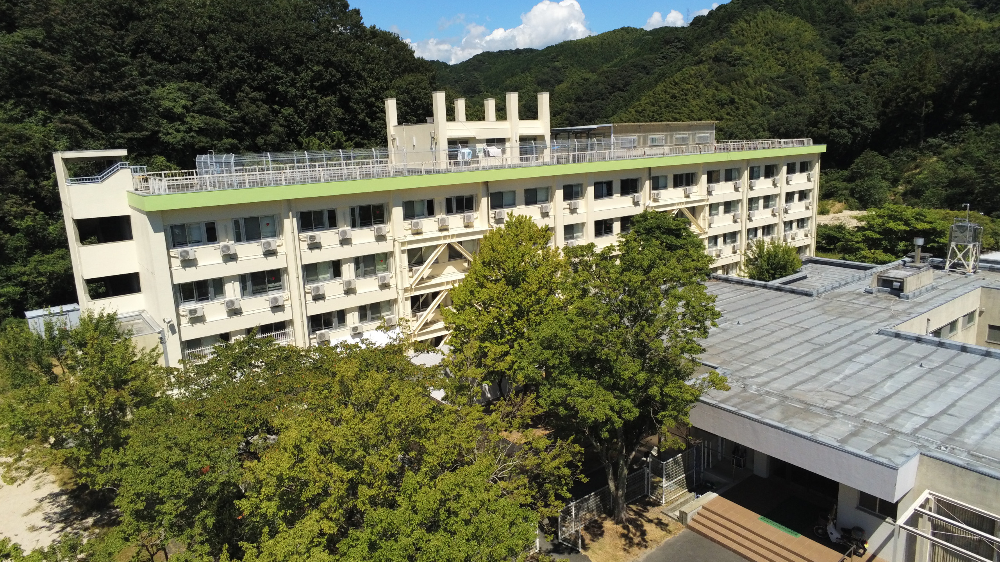

Dormitory students life
At the Takajo Dormitory, we see the dormitory as "a place to enhance one's value and sense of worth while caring for others," and aim to create a
dormitory that
・Safe and comfortable dormitory
・A dormitory where you can study
・A dormitory full of love and virtue
・Energetic dormitory
・Fun dormitory
・Clean dormitory
・Disciplined dormitory
Events at Takajo Dormitory
At the Takajo Dormitory, we value the autonomy of our residents, and the Dormitory Student Association takes the lead in various matters related to
dormitory life.
Throughout the year, various events are held, such as the welcome match for new residents and the farewell party, and these events are also planned and
organized by the dormitory student association.
In terms of studying, it is easier to consult with classmates and upperclassmen than with commuting students. In addition, study sessions are held in the
cafeteria before exams.
| April |
Entrance ceremony
Leader training session for the first semester
First Semester Dormitory Students' Meeting
New resident meeting ceremony
Welcome match for new dormitory students
|
| May |
EmergencyDrill
Study meeting
|
| June |
Parent-teacher's meeting
Dormitory Student Match
|
| July |
Tanabata Party
Study meeting
Dormitory tour
|
| August |
Closing a dormitory |
| September |
Opening a dormitory
Second semester leadership training session
|
| October |
General meeting of late dormitory students
Parent-teacher's meeting
|
| November |
Dormitory festival
Study meeting
Dormitory tour
|
| December |
Farewell party for graduates
Closing a dormitory
|
| January |
Opening a dormitory
Dormitory Student Council Election
Study meeting
Dormitory Student Association Officers' Handover Meeting
|
| February |
Graduation party
Closing a dormitory
|